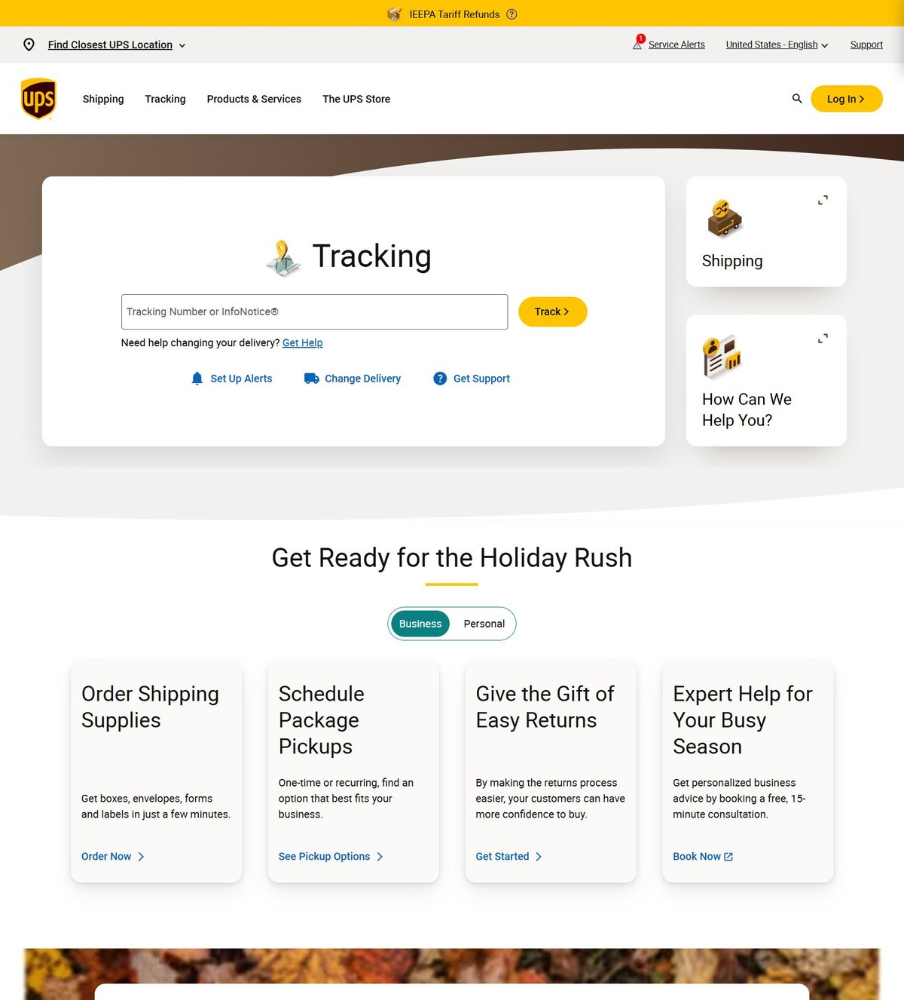
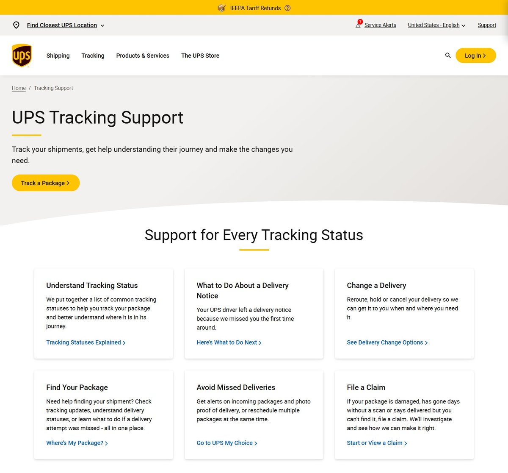

UPS · UX Team Lead · 2019–2024
Redesigning UPS.com Across 220+ Global Sites
UPS.com had grown to 300,000 pages, and 76% of customers couldn't find what they came for. We tore it down and rebuilt it around five tasks. The Forrester UX score rose from 40% to 92%, and the site was named a 2023 Webby Award Honoree for Best User Experience.
Role
Senior Web Content Designer and UX Team Lead
Team
UX, product, engineering and business teams; mentored 15+
Scope
220+ country and language sites
Recognition
2023 Webby Honoree, Best User Experience


The Problem
UPS.com was too big and too confusing. Years of additions had left 300,000 pages spread across 220+ sites, and research showed 76% of customers couldn't find what they wanted.
The goal: make it simple, make it easy and make it look great, across every country and language at once.
The Approach
98%
Cut the Fat
Pages removed, while keeping the 20% of pages that drew the most visits.
5
Simplify Around Tasks
Shipping, tracking, billing, claims and support: content rebuilt around the top five reasons people visit.
1
Design System
A new component system balancing imagery, color and content, with shared patterns and editorial standards for every team.
Results
Chapter · The UPS Store
One Brand, One Experience
The UPS Store ran as a separate site with its own look, voice and navigation. I redesigned its information architecture and folded it into UPS.com as a microsite, using the same design system, so customers saw one brand idea everywhere.
110 → 8
Pages
−75%
Ongoing maintenance

Making It Last
A redesign across 220+ sites only holds if every team builds the same way. I set up shared UX patterns and editorial standards across UPS.com, and mentored and trained 15+ team members in UX, CMS and accessibility.
The same approach shaped my later work: cut what isn't used, organize around what people come to do, and build a system others can maintain.
Next case study
Rebuilding How Investors Navigate Nasdaq.com